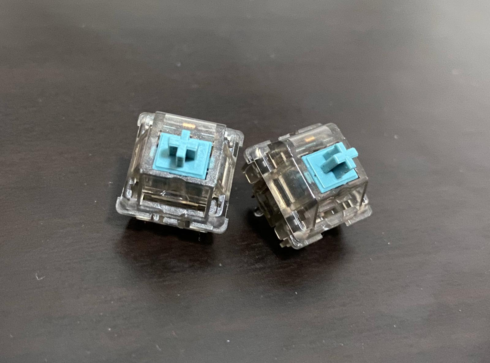

Welcome to my Blog!
Hello! Welcome to my Digital Fabrication and Prototyping Fundamentals blog! My name is Rifky Yudistira and I'm 18 years old from Singapore Polytechnic, currently studying in the Diploma in Architecture (DARCH). I will be posting about my progress and achievements that I have made in this module, including 3D printing projects and my experience with CAD.
A Possible Final Project
For my final project, I was thinking of creating my own hand wired mechanical keyboard. Doing my research, I found out that keyboards typically use a matrix circuit and a diode for every switch to register keypresses, and the matrix circuits would then connect to the arduino. Here is a diagram of how a typical keyboard works:

My plan is to 3d print a case for the keyboard, and lazer cut an acrylic piece to hold the switches in place. To register the keypresses, I am going to use MX-style switches that are used primarily for keyboards. Here is an image of the switch that I am going to use:
